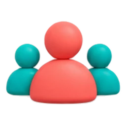
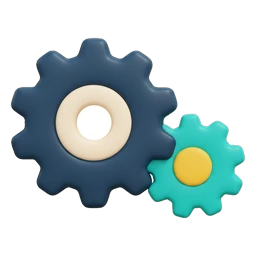
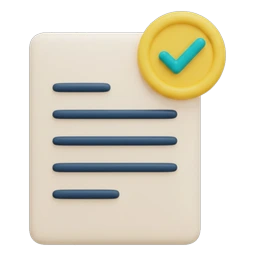

| Decide la estrategia de innovación y el presupuesto; crea la cultura | Iveco decide invertir 233 millones en robotizar Valladolid; una residencia decide pasar toda la medicación a registro digital | Leer datos y decidir con ellos |
 Personas (recursos humanos) | Selección, formación continua en herramientas digitales, teletrabajo, plataformas de comunicación | Casi el 80 % de las pymes no forma a su plantilla en competencias digitales (ONTSI y KPMG, 2026) | Las herramientas nuevas, cada pocos meses |
 Producción u operaciones
en los cuidados, la atención directa | Robots, cobots, sensores, gemelos digitales, datos de las máquinas | Horse Valladolid, «del digital al data centric»; robots sociales Temi y Copito y andadores inteligentes en las residencias públicas de la Junta (2025) | Trabajar junto a la máquina y mantenerla |
Marketing y ventas
en los cuidados, la relación con las familias | Datos de clientes, atención automática, venta y cita en línea | BEONx (Salamanca) fija precios de hotel con IA; la teleasistencia avanzada de la Junta atiende a 58.000 personas con teleoperador de referencia (2025) | Atender por varios canales y proteger los datos |
 Administración | Factura electrónica, programas que leen documentos, cobros automáticos | Mercadona pone inteligencia artificial a leer las facturas de sus proveedores (2025) | Revisar lo que hace el programa, no teclearlo |